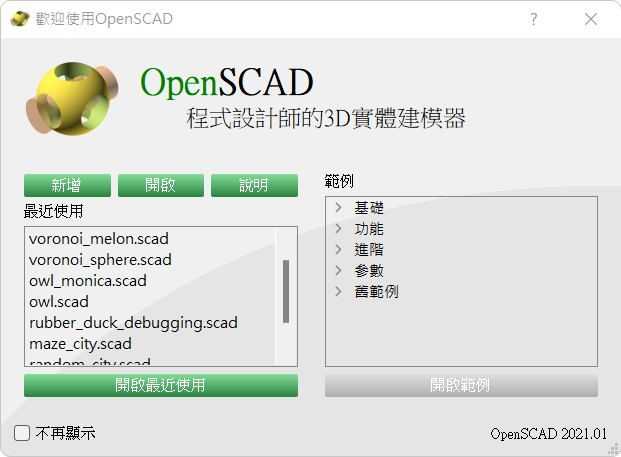
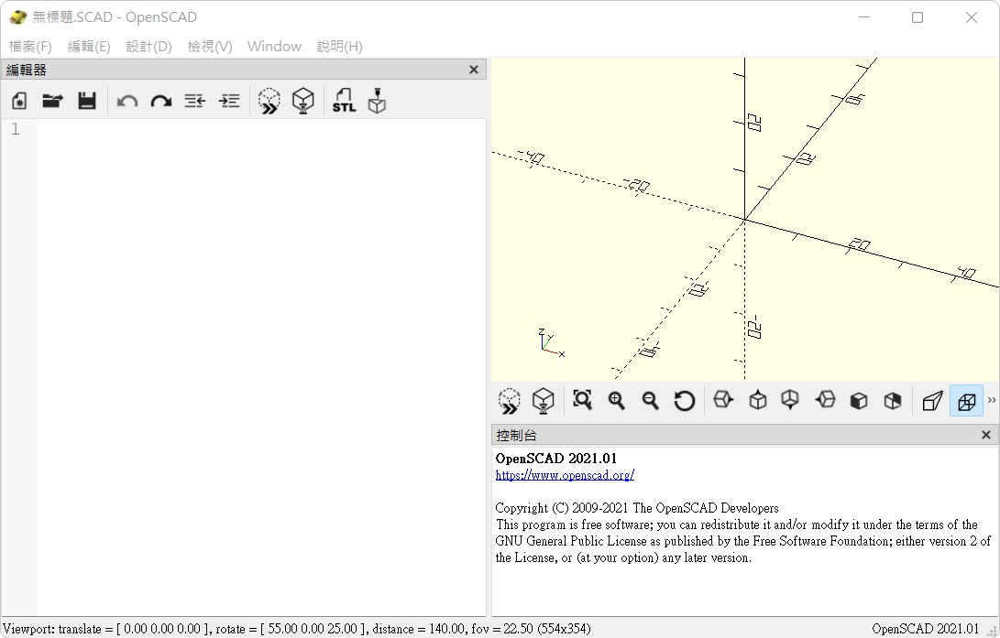
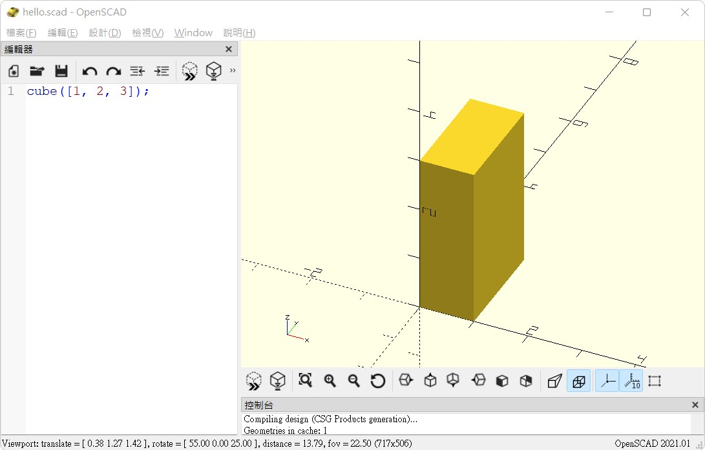
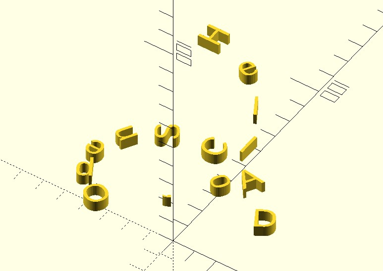
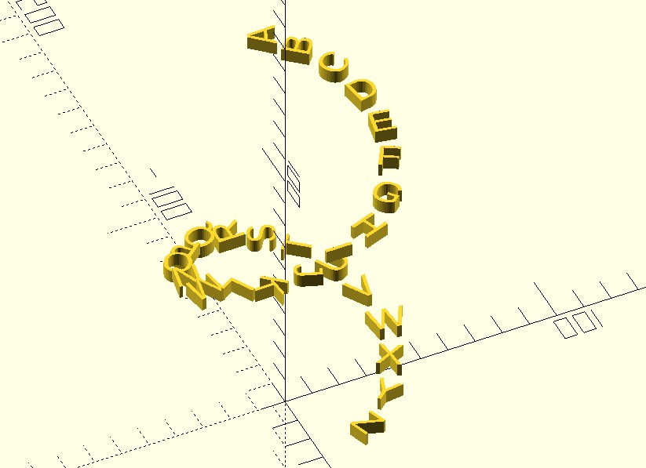
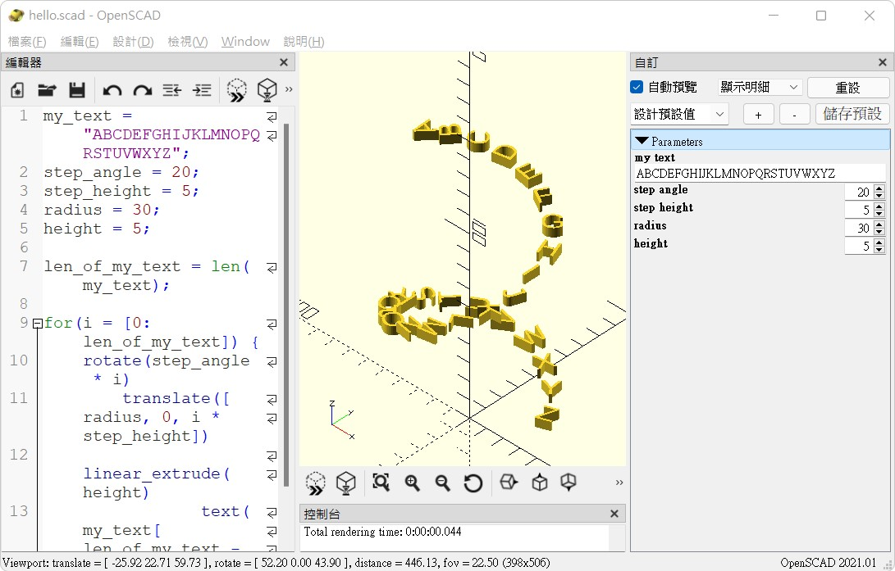
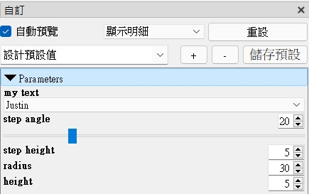
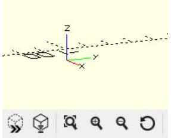

Hello, OpenSCAD
February 20, 2022自 2015 年以來，我就蠻熱衷於使用程式碼描述 3D 模型，最初使用的就是 OpenSCAD，實作出許多的模型，全部都公開在 Thingiverse ，其中我覺得比較有意思的一些，特意收集在 Cults。
相較於其他程式語言，OpenSCAD 是小眾語言，加上它本身是基於函數式（functional programming），令它的使用有些挑戰性；即便如此，它確實抓到了 Code + CAD 的要點，令其在 Code + CAD 的領域，始終是被拿來作為比較的對象。
然而，有些人使用 OpenSCAD，不見得是想拿函數式來虐腦，也不見得是想自行實現程式庫來做更複雜的東西，因此我打算將這些年來使用 OpenSCAD 的一些經驗，寫些入門文件，然後銜接我打造的 dotSCAD，看看怎麼基於 dotSCAD 來做出更有趣而僅僅是玩具範例的東西。
下載 OpenSCAD
當然，第一步還是要先下載 OpenSCAD 的環境，這可以在官網的 download 中找到，在撰寫這份文件的時候，穩定的版本是 OpenSCAD 2021.01，已經有中文介面，不過有些缺漏（因為中文翻譯語系是不久前才加入的）。
在同頁面的下方，有個 Development Snapshots 區域，可以下載最新的 Build，以日期作為區別，正如其 Build 名稱指出的，這是會不定期地釋出的版本，穩定性什麼的就自行考量。
文件會以 OpenSCAD 2021.01 為環境，以 Windows 版本來說，只要下載 zip 版本就可以了，注意你的系統是 32 位元還是 64 位元，下載後解開 zip 至你想要放置的資料夾，執行 openscad.exe，就可以開啟程式了，第一次開啟的畫面會像是以下：

如果你開啟過一些 OpenSCAD 的原始檔，左邊會留下記錄，方便下一次開啟，右邊是一些範例，日後你有興趣再自行研究其原始碼就可以了，至於現在，可以先按下「新增」的按鈕，這會開啟一個新的 OpenSCAD 檔案，並進入預設的環境設定：

編輯器設定
上圖左邊是 OpenSCAD 2021.01 預設的編輯器，不過，如果你有慣用的編輯器，倒也不一定要用這個編輯器，你可以執行上方選單的「View/Hide Editor toolbar」，這樣就會隱藏預設的編輯器。
接著，你可以使用任何一個你實用的編輯器，例如，若想改用 NotePad++，就直接編輯一個 .scad 副檔名的文字檔案，像是 hello.scad，文字檔編碼請使用 UTF-8，這樣的話，遇到非西歐字元（像是中文），也才能正確地解譯。
如果你使用 Visual Studio Code，可以安裝〈OpenSCAD for VS Code〉延伸模組，可以有程式碼 Highlight、基本的關鍵字提示等功能。
你可以試著在 hello.scad 輸入：
cube([1, 2, 3]);
這個簡單的程式碼，表示以長、寬、高 [1, 2, 3] 建立一個立方體，然後，在 OpenSCAD 的選單執行「File/Open」，開啟 hello.scad，這樣就會如下圖所示：

你可以繼續編輯檔案，OpenSCAD 的預設只要偵測到檔案內容有變動，就會自動重新載入檔案並重新預覽模型，你可以試著改變 cube([1, 2, 3]) 中的數字並存檔，就能馬上看到預覽模型的變化。
基本上，存檔後自動載入檔案並進行模型預覽，是比較方便，不過，你也可以取消這個行為，這可以在選單「設計/自動重新載入與預覽」設定。
Hello, OpenSCAD
程式建模的好處之一，就是可以參數化，在適當地設計之下，只要改變某些參數，就可以產生新的模型，既然如此，就來個 Hello, OpenSCAD 作為示範吧！在你的 .scad 檔案中輸入以下的內容：
my_text = "Hello, OpenSCAD";
step_angle = 30;
step_height = 5;
radius = 30;
height = 5;
len_of_my_text = len(my_text);
for(i = [0:len_of_my_text]) {
rotate(step_angle * i)
translate([radius, 0, i * step_height])
linear_extrude(height)
text(my_text[len_of_my_text - i]);
}
這個程式有些需要說明的地方，這會是之後文件的課題，當各個元素你都瞭解之後，再來看這個程式就會覺得非常簡單了。
就目前來說，只要知道這個程式的主要目的，是稍微展現一下程式建模的威力，你會看到以下的預覽圖形：

你可以試著改變 my_text、step_angle、radius、height 的值，就會看到不同的結果，例如，設定以下的值：
my_text = "ABCDEFGHIJKLMNOPQRSTUVWXYZ";
step_angle = 20;
step_height = 5;
radius = 30;
height = 5;
就可以看到一個很漂亮的字母樓梯了：

你可以試著在預覽中試著使用滑鼠左鍵或右鍵分別拉動，就可以轉動或平移模型預覽，按住 Shift 鍵的話再操作的話，可以有不同的轉動軸與縮放效果，如果有滑鼠滾輪的話，也可以直接以滾輪縮放。
使用 Customizer
雖然修改原始碼後存檔，就可以產生新的模型預覽，不過還是有些不方便；OpenSCAD 有個方便的 Customzier 介面，程式碼開頭留下的參數，會自動成為 Customzier 介面的一部份，你可以在選單「Window/Customizer」開啟：

你可以直接在 Customzier 調整參數，OpenSCAD 會讀取調整後的參數重新顯示預覽，若在原始碼中加上一些特別的註解文字，還可以讓參數擁有下拉選單、拉桿之類的效果。例如在方才程式碼開頭的參數旁加上：
my_text = "Justin"; // [Justin, Monica]
step_angle = 20; // [0:90]
step_height = 5;
radius = 30;
height = 5;
Customizer 就會出現下拉選單、拉桿：

如果想知道如何使用其他的註解文字，來調整 Customizer 的介面，可以參考〈OpenSCAD User Manual/Customizer〉。
匯出 STL
OpenSCAD 的模型預覽，就真的只是預覽，許多 3D 的資料並沒有產生，例如，將可見的部份繪製出來，聯集操作預覽時不會執行等。
如果你想匯出模型，必須先執行選單「設計/渲染」，讓 OpenSCAD 計算 3D 模型資料，這個動作也可以按下 F6 或者是預覽窗格工具例中有個「I」的圖示來完成，也就是下圖中左邊數來第二個圖示：

順便一提的是，預覽的左下方都會指示出 XYZ 座標的正方向，這在 3D 建模中是很重要的指示，你總得知道現在圖形的方向不是嗎？OpenSCAD 採用右手座標，旋轉操作時，右手姆指是旋轉軸的話，其他四指的變曲方向就是正角度的旋轉方向。
視模型的複雜度與電腦的執行速度而定，渲染可能很快或者花上很長的一段時間，以上面的簡單模型來說，渲染只要一瞬間；完成渲染之後，可以執行選單「檔案/匯出/匯出為STL」來匯出 STL，其中也有可匯出的其他格式。
命令列執行
不少人會問，有沒有辦法批次指定參數來逐一產生模型呢？OpenSCAD 可以在文字模式中執行，相關引數可以在〈Using OpenSCAD in a command line environment〉查看。
例如，可以設定環境變數 PATH 至包含 openscad.exe 的路徑，若 hello.scad 包含了以上螺旋文字的程式碼，現在想指定 my_text 與 height 參數，生成 hello.stl 的話，可以如下：
openscad -o hello.stl -D "my_text=\"Hi, OpenSCAD\"" -D "height=20" hello.scad
接下來就是看你怎麼將這個指令寫成批次檔，看你是要用 .bat 還是什麼了。
當然啦！方才的程式產生的簡單模型列印出來沒什麼意義，而且它每個字都是分離的，這只是體驗，之後再來設計一些有趣且可列印的模型範例。